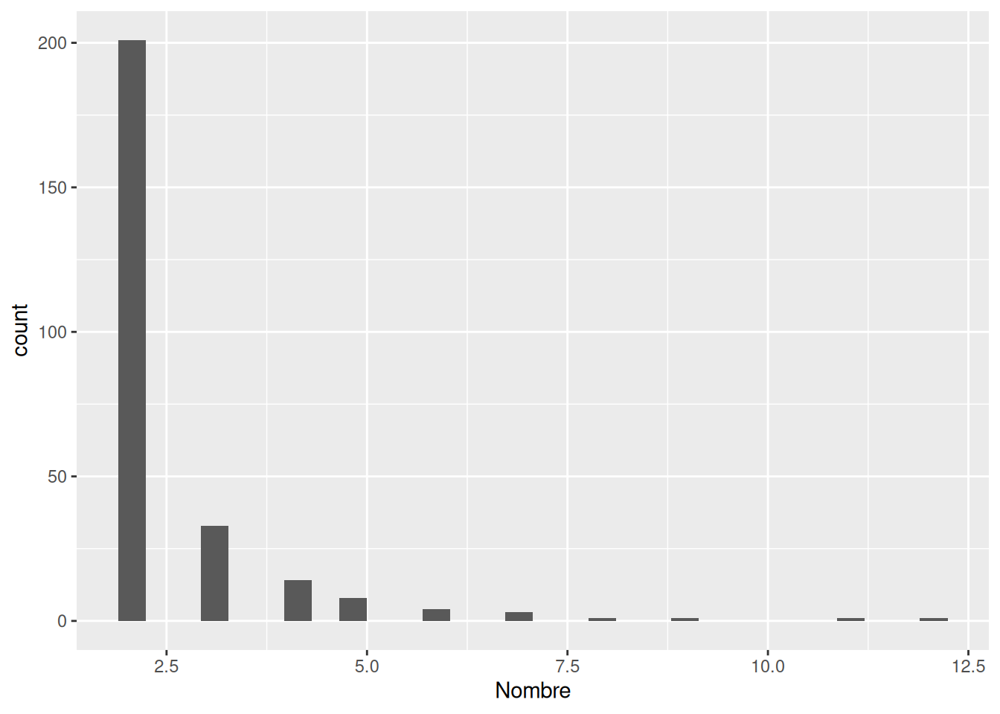
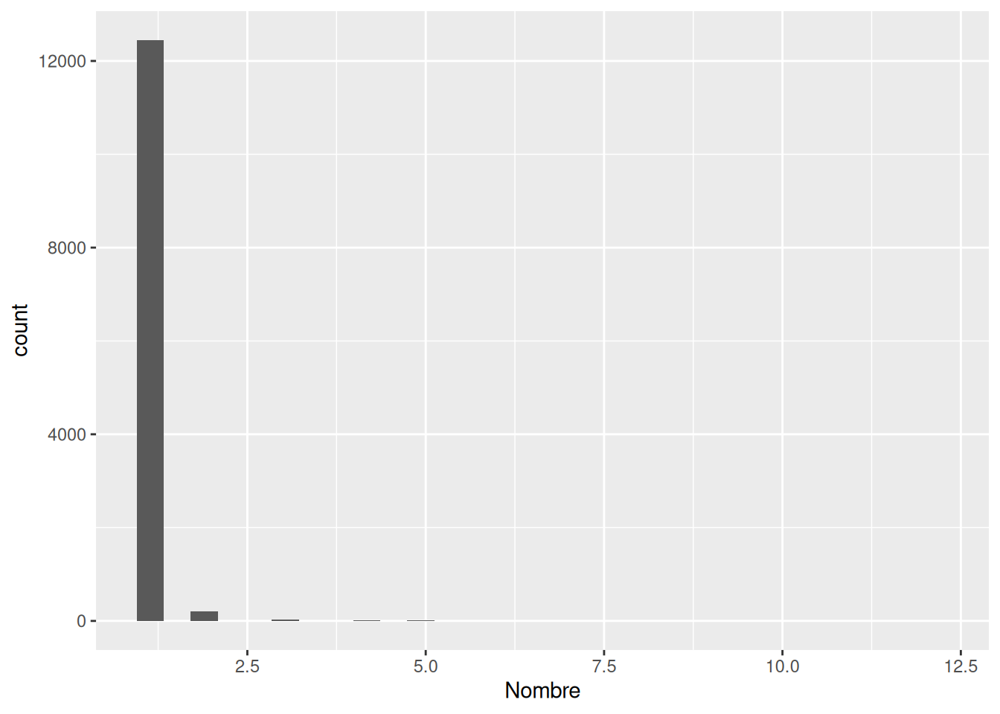
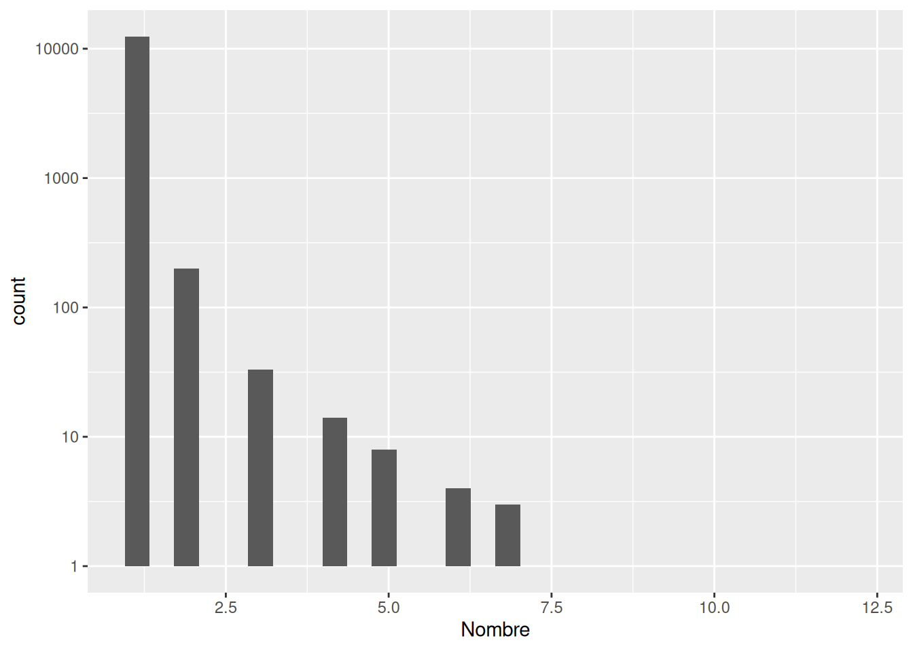
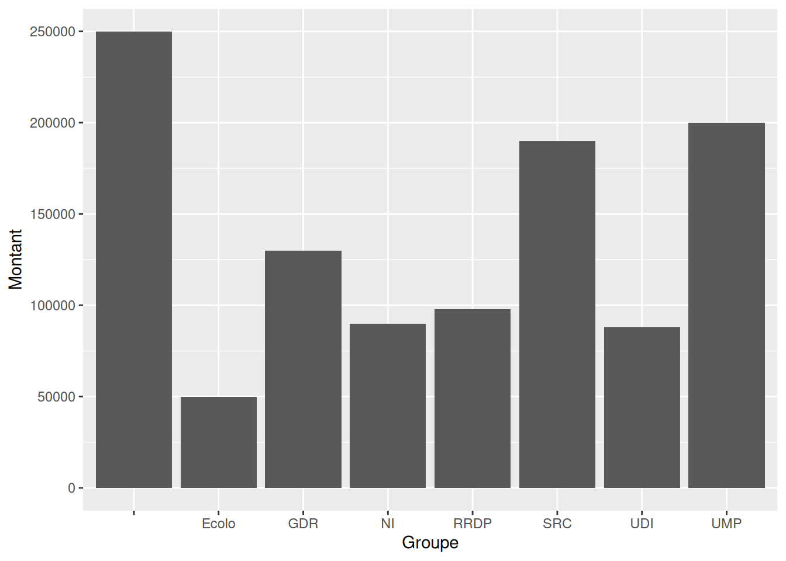
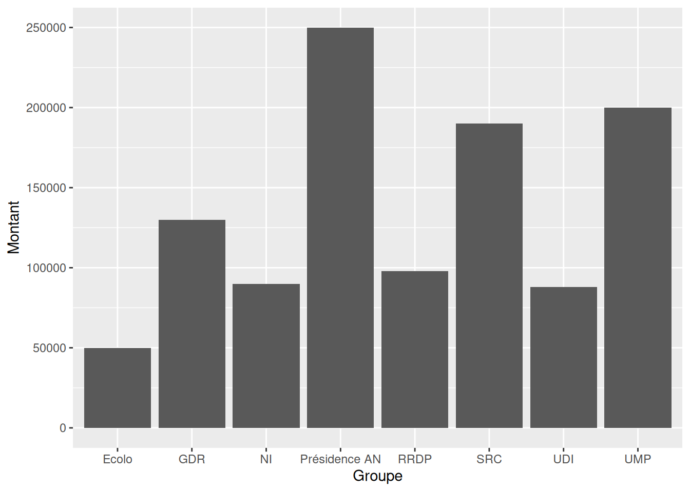
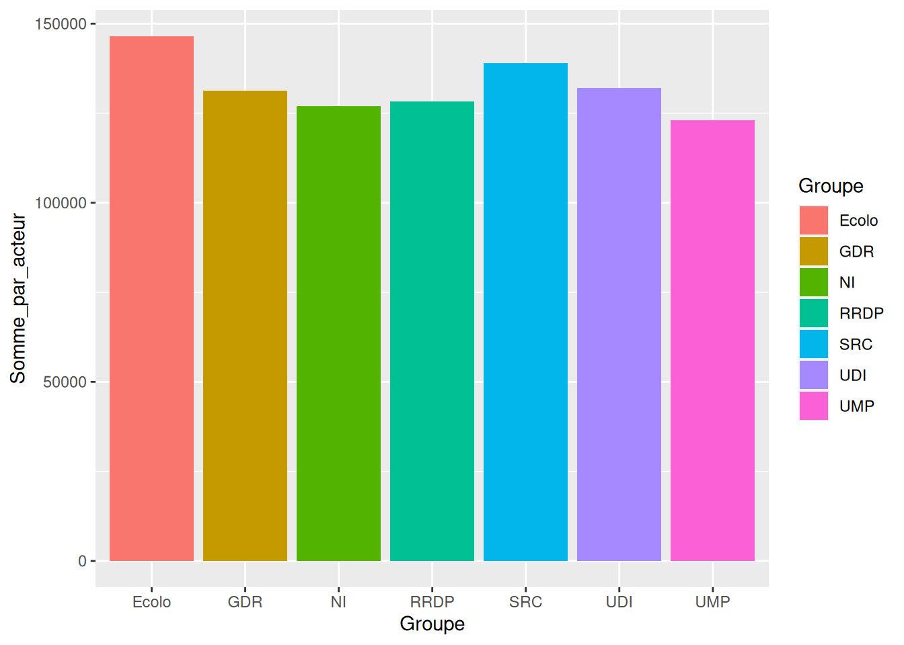

Chapter 9 Données des réserves parlementaires
Dans cette partie, on étudie l’utilisation de la réserve parlementaire par les députés.
Ce sont les données de 2014
Les questions sont celles d’une personne naïve et sans a priori :
Est-ce que les groupes ont dépensé chacun autant ?
Est-ce que les groupes ont dépensé chacun autant en moyenne ?
Est-ce vrai pour les députés en moyenne ? IdAuteur
Quel est l’enveloppe dépensé au total ?
- Est-ce possible avec le descriptif d’avoir les mots-clefs pour les sous dépensés ?
## 'data.frame': 13133 obs. of 10 variables:
## $ Bénéficiaire : chr "Télé Bocal" "Mieux se déplacer à Bicyclette" "Festival du livre et de la presse d'écologie" "ARDHIS" ...
## $ Adresse : chr "Maison des associations\n1/3 rue Frédérique Lemaître\n75020 Paris" "MDB –\n37 boulevard Bourdon\n75004 Paris" "6 cité de l’Ermitage\n75020 Paris" "76 cours de Vincennes\n75012 Paris" ...
## $ Descriptif : chr "Mise en œuvre d'ateliers de production locale proposant d’utiliser l'image comme une valorisation du travail des artistes" "Réalisation des supports de communication pour faire connaître ses nouvelles dispositions sur l'usage de la bic"| __truncated__ "Organisation du Festival du livre et de la presse d’écologie Promotion du livre et de l’écrit, information, sen"| __truncated__ "Mise en place d’outils de communication : plaquette multilingue qui pourrait être mise à disposition dans les d"| __truncated__ ...
## $ Montant : int 5000 4000 3500 2500 5000 2000 3000 2000 10000 8000 ...
## $ Nom : chr "BAUPIN" "BAUPIN" "BAUPIN" "BAUPIN" ...
## $ Prénom : chr "Denis" "Denis" "Denis" "Denis" ...
## $ Département : chr "Paris" "Paris" "Paris" "Paris" ...
## $ Groupe : chr "Ecolo" "Ecolo" "Ecolo" "Ecolo" ...
## $ Programme budgétaire: chr "313-03" "203-15" "334-01" "177-11" ...
## $ ID_Acteur : chr "PA609016" "PA609016" "PA609016" "PA609016" ...Pourquoi c’est compliqué de faire un gtsummary direct ?
En fait on va se demander si il y a un bénéficiaire qui apparait plusieurs fois.
9.1 Bénéficiaires
## [1] 267Si oui, est-ce qu’on peut le mettre sous forme de data.frame ? Pourquoi on a besoin d’une data.frame pour représenter graphiquement ces informations ?
## 'data.frame': 12718 obs. of 2 variables:
## $ Nom : chr "\"Le Tracteur\" - Compagnie Beaudrain de paroi" "\"Petite enfance\net soutien\nà la parentalité\"" "(A.R.A.C.) Section Saint-Marcel" "« La Bande à Michel » section théâtre du Foyer Laïque" ...
## $ Nombre: num 1 1 1 1 1 1 1 1 1 1 ...Une représentation visuelle de la répartition du nombre sur ceux qui ont plus de 2 donations et après sur l’ensemble.

Quels sont les bénéficiaires de plus de 5 donations ? Ce sont des termes génériques ou des entités ?
tbt <- table(reserve$Bénéficiaire)
dt <- data.frame(Nom=names(tbt),Nombre=as.numeric(tbt))
dt[dt$Nombre>5,]## Nom Nombre
## 325 AIDES 6
## 2927 BRIGNOLES 6
## 3982 Comité des Fêtes 7
## 4475 Commune de Crest 8
## 6416 FNACA 7
## 8060 Le Refuge 11
## 10509 Restos du Cœur 6
## 11095 Secours catholique 9
## 11096 Secours Catholique 6
## 11116 Secours Populaire 12
## 11527 Sou des Ecoles Laïques 7tbt <- table(reserve$Bénéficiaire)
dt <- data.frame(Nom=names(tbt),Nombre=as.numeric(tbt))
ggplot(dt,aes(Nombre))+geom_histogram()
9.2 Par groupe politique
Si on regarde les dépenses par groupe.


Mais que ?
##
## Ecolo GDR NI RRDP SRC UDI UMP
## 52 549 148 128 262 5172 741 6081Il faut trouver et corriger.
##
## Présidence de l'Assemblée nationale
## 52##
## Agir en faveur de l'emploi des jeunes diplômés issus des quartiers prioritaires ou de milieux sociaux défavorisés.
## 1
## Association de juriste dans la lutte contre l'exclusion
## 1
## Création d'un système d'information pour le réseau Habitat Jeunes
## 1
## Equipement du futur 3ème siège de l'Alliance française de la Havane
## 1
## Fonctionnement
## 44
## Fonctionnement Mardis de l'Avenir
## 1
## Insertion sociale et professionnelle par le sport
## 1
## Soutien projet consacré aux femmes de l'immigration
## 1
## Travaux d'intérêt local
## 1L’erreur corrigée

Les résultats par groupe avec gtsummary ou summarize.
on en profite pour calculer la somme des donations, la donation moyenne par Acteur et le nombre d’acteur par groupe
groupe <- reserve %>% group_by(Groupe)
res <- groupe %>% summarize(min=min(Montant),max=max(Montant),
Moyenne=mean(Montant),EC=sd(Montant),
Somme=sum(Montant),nbActeur=length(unique(ID_Acteur)),
Somme_par_acteur=Somme/nbActeur)
res ## # A tibble: 8 × 8
## Groupe min max Moyenne EC Somme nbActeur Somme_par_acteur
## <chr> <int> <int> <dbl> <dbl> <int> <int> <dbl>
## 1 Ecolo 500 50000 4805. 4039. 2637890 18 146549.
## 2 GDR 67 130000 14198. 18951. 2101366 16 131335.
## 3 NI 800 90000 8926. 10212. 1142574 9 126953.
## 4 Présidence AN 1000 250000 54923. 53608. 2856000 1 2856000
## 5 RRDP 650 98000 8813. 11365. 2309018 18 128279.
## 6 SRC 300 190000 7797. 10387. 40323770 290 139047.
## 7 UDI 960 88000 5523. 6880. 4092383 31 132012.
## 8 UMP 240 200000 4047. 7410. 24608557 200 123043.9.4 Les sommes par acteurs
Les sommes par acteurs selon les groupes
ggplot(res %>% filter(nbActeur != 1),aes(x=Groupe,y=Somme_par_acteur,fill=Groupe))+
geom_bar(,stat="identity",position="dodge")
9.5 Quoi faire avec le descriptif ?
En utilisant le descriptif :
reserve <- reserve %>% mutate(doc_id=paste0("A",1:nrow(reserve)))
reserve_corpus <- corpus(
reserve,
text_field = "Descriptif",
docid_field = "doc_id"
)
mystopwords <- c("loire-atlantique","c'est")
tok <- tokens(reserve_corpus, remove_punct = TRUE, remove_numbers = TRUE) %>%
tokens_tolower() %>%
tokens_remove(pattern = mystopwords,valuetype = 'fixed') %>%
tokens_remove(stopwords("fr")) %>%
tokens_wordstem(language="fr")
dtm <- dfm(tok)
res <- rainette(dtm, k = 5)
#rainette_explor(res, dtm, reserve_corpus)tok <- tokens(reserve_corpus, remove_punct = TRUE, remove_numbers = TRUE) %>%
tokens_remove(pattern = mystopwords,valuetype = 'fixed') %>%
tokens_tolower() %>%
tokens_remove(stopwords("fr")) %>%
tokens_wordstem(language = "fr")
dtm <- dfm(tok)
top=topfeatures(dtm, 30)
topall=topfeatures(dtm, 300)
top## fonction d'un traval local aménag achat associ cultur d'intérêt matériel sall sport
## 5254 1282 813 793 439 425 422 406 404 374 374 366
## création mis réfect rénov vi mair communal construct l'écol ru l'aménag l'églis
## 342 323 321 309 295 294 287 270 235 235 234 234
## scolair organis restaur soutien aid acquisit
## 232 226 225 196 194 185